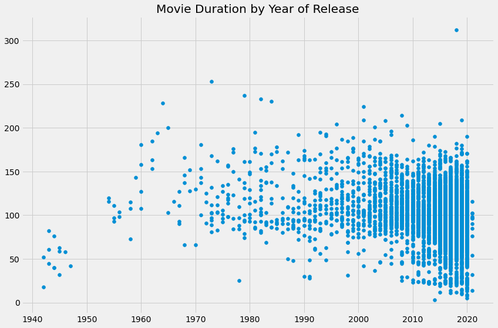

Machine Learning projects
CIFAR-10 object recognition
Object Detection(Computer Vision)
The objective of this project was to develop an object detection model using the CIFAR-10 dataset. The CIFAR-10 dataset consists of 60,000 32x32 color images in 10 classes, with 6,000 images per class. The classes include airplane, automobile, bird, cat, deer, dog, frog, horse, ship, and truck. The goal was to train a deep learning model to accurately detect and classify objects in the CIFAR-10 images.
.png)
Despite the low quality of the input image, the trained model was able to successfully detect underlying patterns, demonstrating its ability to learn and generalize from the training data
.png)
Full project code can be found on my GitHub repository here
Used Technologies include: Python, OpenCV, Pandas, NumPy, Tensorflow, Jupyter
Conser-vision
Object Detection and Image Classification(Computer Vision)
In this challenge which was a competition from drivendata.org, my goal was to classify the species that appear in camera trap images collected by their research partners at the Wild Chimpanzee Foundation and the Max Planck Institute for Evolutionary Anthropology.
My job was to build a model that can help researchers predict whether an image contains one of seven types of species.
For this challenge, I was provided with images, along with a few attributes of each image that might be helpful in setting up your training and testing sets.
Each record in the dataset corresponds to a single image captured by a camera trap. Each record had one .jpg file associated with it.
Here is an example of a single image in the dataset - ZJ000048, which captures a monkey in the act of looking cute:
Here is the associated metadata for this image provided in train_features.csv:
Here is an example of a blank image (ZJ000144), where there are no animals detected:
These are its accompanying characteristics in train_features.csv:
Finally, here is an image from test_features (ZJ016556) and unlike the previous two images, which were a part of the training set, there is no test_labels.csv file to look up for this one! My model had to do the work:
Here is the information i had from test_features.csv:
The animals were sometimes maybe close or far from the camera, in the sun or in the shadows, or facing toward or away from the lens, among other variations. There are also differences in the color of the images, the weather conditions it was taken, and the type of camera. In order to teach the model to generalize well despite these differences, it was helpful to perform a preprocessing step called image augmentation. Image augmentation involves transforming the training set in multiple ways—rotating, distorting in color or sharpness, zooming in or out, are a few examples. These manipulations of the image helped the model make correct predictions in contexts it has not been exposed to before.
There were eight possible labels for every image. If the image does not contain any animals, it is labeled as blank. Otherwise it had to be labeled as containing one of the seven species groups included in the dataset:
- antelope_duiker
- bird
- civet_genet
- hog
- leopard
- monkey_prosimian
- rodent
My submitted file contained nine columns:
- id (string): unique identifier for each row from test_features.csv
- antelope_duiker, bird, blank, civet_genet, hog,leopard, monkey_prosimian, rodent (float, target variables): there is a column for each of the eight possible classes containing the probability that the image is of that class.
The predictions for the target variables are float probabilities that range between 0.0 and 1.0. Each row adds up to 1, since the classes are mutually exclusive. My submitted file looks like this:
To measure my model's accuracy by looking at prediction error, I used a metric called log loss. This is an error metric, so a lower value is better (as opposed to an accuracy metric, where a higher value is better). My model achieves a nice score of 2.1960
Full project code can be found on my GitHub repository here
Used Technologies include: Python, OpenCV, Pandas, Tensorflow, Jupyter, Colab, DrivenData
Google Play Store apps and reviews Analysis
Data Wrangling(Data Science)
Mobile apps are everywhere. They are easy to create and can be lucrative. Because of these two factors, more and more apps are being developed. In this project I did a comprehensive analysis of the Android app market by comparing over ten thousand apps in Google Play across different categories to look for insights in the data so as to devise strategies to drive growth and retention
With more than 1 billion active users in 190 countries around the world, Google Play continues to be an important distribution platform to build a global audience. For businesses to get their apps in front of users, it's important to make them more quickly and easily discoverable on Google Play. To improve the overall search experience, Google has introduced the concept of grouping apps into categories.
This brings up the following questions:
- Which category has the highest share of (active) apps in the market?
- Is any specific category dominating the market?
- Which categories have the fewest number of apps?
On investigation, I see that there are 33 unique app categories present in the acquired dataset. Family and Game apps have the highest market prevalence. Interestingly, Tools, Business and Medical apps are also at the top.
After having witnessed the market share for each category of apps, I saw how all these apps perform on an average. App ratings (on a scale of 1 to 5) impact the discoverability, conversion of apps as well as the company's overall brand image. Ratings are a key performance indicator of an app.
From my research, I found that the average volume of ratings across all app categories is
4.17.
The histogram plot below is skewed to the left indicating that the majority
of the apps are highly rated with only a few exceptions in the low-rated apps.

Next I examined app size and app price. For size, if the mobile app is too large, it may be difficult and/or expensive for users to download. Lengthy download times could turn users off before they even experience your mobile app. Plus, each user's device has a finite amount of disk space. For price, some users expect their apps to be free or inexpensive. These problems compound if the developing world is part of your target market; especially due to internet speeds, earning power and exchange rates.
How can we effectively come up with strategies to size and price our app?
- Does the size of an app affect its rating?
- Do users really care about system-heavy apps or do they prefer light-weighted apps?
- Does the price of an app affect its rating?
- Do users always prefer free apps over paid apps?
I found that the majority of top rated apps (rating over 4) range from 2 MB to 20 MB. I also found that the vast majority of apps price themselves under $10.
So then comes an important part. How are companies and developers supposed to make ends meet? What monetization strategies can companies use to maximize profit? The costs of apps are largely based on features, complexity, and platform.
There are many factors to consider when selecting the right pricing strategy for your mobile app. It is important to consider the willingness of your customer to pay for your app. A wrong price could break the deal before the download even happens. Potential customers could be turned off by what they perceive to be a shocking cost, or they might delete an app they’ve downloaded after receiving too many ads or simply not getting their money's worth.
Different categories demand different price ranges. Some apps that are simple and used daily, like the calculator app, should probably be kept free. However, it would make sense to charge for a highly-specialized medical app that diagnoses diabetic patients. Below, we see that Medical and Family apps are the most expensive. Some medical apps extend even up to $80! All game apps are reasonably priced below $20.
On having a good look it looks like a bunch of the really expensive apps are "junk" apps. That is, apps that don't really have a purpose. Some app developer may create an app called I Am Rich Premium or most expensive app just for a joke or to test their app development skills. Some developers even do this with malicious intent and try to make money by hoping people accidentally click purchase on their app in the store.
I filtered out these junk apps and visualized with our new data.
For apps in the Play Store today, there are five types of pricing strategies: free, freemium, paid, paymium, and subscription. I focused on free and paid apps only. Some characteristics of free apps are:
- Free to download.
- Main source of income often comes from advertisements.
- Often created by companies that have other products and the app serves as an extension of those products.
- Can serve as a tool for customer retention, communication, and customer service.
Some characteristics of paid apps are:
- Users are asked to pay once for the app to download and use it.
- The user can't really get a feel for the app before buying it.
Are paid apps installed as much as free apps? It turns out that paid apps have a relatively lower number of installs than free apps, though the difference is not as large as I would have expected!
Finally by plotting sentiment polarity scores of user reviews for paid and free apps, I observed that free apps receive a lot of harsh comments, as indicated by the outliers on the negative y-axis. Reviews for paid apps appear never to be extremely negative. This indicate something about app quality, i.e., paid apps being of higher quality than free apps on average. The median polarity score for paid apps is a little higher than free apps, thereby syncing with the previous observation.
I analyzed over ten thousand apps from the Google Play Store and can use the findings to inform decisions should one ever wish to create an app themselves.
Full project code can be found on my GitHub repository here.
Used Technologies include: Python, NumPy, Pandas, Plotly, Jupyter, Seaborn, Matplotlib
Big Mart Sales Prediction
Predictive Modeling(Regression)
In this project, I worked on a dataset that contains information about sales of products in a supermarket chain. The goal is to build a model to predict the sales of the products in the future. To achieve this goal, I used various techniques of data preprocessing, exploratory data analysis, and machine learning. The dataset used in this project was obtained from Kaggle. It contains information about 8,523 products and their sales in 10 different stores. The dataset has 12 features, including both numerical and categorical variables.
EXPLORATORY DATA ANALYSIS: I started the project by exploring the dataset using various plots and statistics. First, I checked for missing values and filled them using mean and mode. Then, I analyzed the distribution of the numerical variables, including Item_Weight, Item_Visibility, Item_MRP, and Item_Outlet_Sales. I also plotted the count of the establishment year of the stores. For the categorical variables, I plotted the count of each category, including Item_Fat_Content, Item_Type, and Outlet_Size.
DATA PREPROCESSING:
After exploring the dataset, I preprocessed the data for machine learning.
I first replaced the inconsistent categories in Item_Fat_Content with Low Fat and Regular.
Then, I used LabelEncoder to encode the categorical variables. Finally,
I split the data into train and test datasets.
MODEL BUILDING AND EVALUATION:
I used XGBoost, a powerful gradient boosting algorithm, to build the model.
I trained the model on the train dataset and evaluated it using R-squared
and Root Mean Squared Error (RMSE) on both the train and test datasets.
The model achieved an R-squared score of 0.64 and RMSE of 1,074.11 on the train dataset,
and an R-squared score of 0.57 and RMSE of 1,204.03 on the test dataset.
CONCLUSION:
In this project, I used various techniques of data preprocessing, exploratory data analysis,
and machine learning to build a model to predict the sales of products in a supermarket chain.
The model achieved a moderate performance, with an R-squared score of 0.57 and RMSE of 1,204.03
on the test dataset. Future work can include trying different machine
learning algorithms and feature engineering techniques to improve the performance of the model.
Full project code can be found on my GitHub repository here.
Used Technologies include: Python, Jupyter Notebook, NumPy, Pandas, Matplotlib, Seaborn, Scikit-learn, XGBoost
Calories Burnt Prediction App
Predictive Modeling(Regression)
This project aims to predict the calories burnt by an individual during exercise using XGBoost regression. The dataset used in this project includes information on the individual's age, gender, weight, height, and exercise details. The model is trained on the given dataset and is used to predict the number of calories burnt during exercise. The dataset used in this project is a combination of two datasets, 'calories.csv' and 'exercise.csv'. Both datasets are available in the 'data' directory. The 'calories.csv' dataset contains information on the individual's age, gender, height, weight, and calories burnt during exercise. The 'exercise.csv' dataset contains information on the individual's exercise details, including exercise type, duration, and heart rate.
DATA PREPARATION: The 'User_ID' column is dropped from the 'calories.csv' dataset, and the two datasets are merged to create a single dataset named 'the_dataset'. The 'Gender' column is converted to binary values (0 for male, 1 for female), and the correlation between the variables is calculated.
MODEL BUILDING AND EVALUATION:
The dataset is split into training and testing sets, with 80% of the data used for training
and the remaining 20% used for testing. The XGBoost regression model is trained on the training
data, and the predictions are made on the testing data.
The performance of the model is evaluated using the R-squared error and mean absolute error
(MAE)
MODEL DEPLOYMENT:
The trained model is saved in a pickle file named 'finalized_model.sav'. A web application is
created using Flask, HTML, CSS, and JavaScript that takes
input from the user and predicts the number of calories burnt during exercise using
the trained model.
CONCLUSION:
In this project, we have successfully built a model that can predict the number of calories burnt
during exercise based on the given
input parameters. The model can be further improved by using more data and tuning the
hyperparameters.
Full project code can be found on my GitHub repository here.
Used Technologies include: Python, NumPy, Pandas, Seaborn, Scikit-learn, XGBoost, Flask, HTML/CSS/JavaScript
Used Car Price Prediction
Predictive Modeling(Regression)
The goal of this project is to build a machine learning model to predict the selling price of used cars based on various features. The dataset used for this project contains information about used cars, including the car name, the year of purchase, the selling price, the fuel type, the transmission type, and more.
Data Preprocessing:
The dataset was loaded into a Pandas DataFrame. Categorical data was encoded with integer values.
The data was then split into training and testing sets using the train_test_split function from
Scikit-learn.
Model Training:
Two regression models were trained and evaluated: Linear Regression and Lasso Regression.
For each model, the R-squared error was calculated for both the training and testing datasets.
Model Evaluation:
The actual and predicted prices for both the training and testing datasets were visualized using
scatter plots. The models were evaluated based on their R-squared error, and the best model was
selected.
Results:
The best model was found to be Lasso Regression, which achieved an R-squared error of 0.76
on the testing dataset. This indicates that the model can explain 76% of the variance in the
selling price of used cars. The model can be used to predict the selling
price of a used car based on its features.
Conclusion:
This project demonstrated how to build a machine learning model to predict the selling price of
used cars. The Lasso Regression model achieved the best performance, with an R-squared error of
0.76 on the testing dataset. This project can be expanded by using more advanced machine learning
techniques, or by incorporating additional features into the model.

Full project code can be found on my GitHub repository here.
Used Technologies include: Python, NumPy, Pandas, Seaborn, Scikit-learn, Lasso, Ridge, Jupyter Notebook
Credit Card Approval System
Predictive Modeling(Classification)
Commercial banks receive a lot of applications for credit cards. Many of them get rejected for many reasons, like high loan balances, low income levels, or too many inquiries on an individual's credit report, for example. Manually analyzing these applications is mundane, error-prone, and time-consuming (and time is money!). Luckily, this task can be automated with the power of machine learning and pretty much every commercial bank does so nowadays.

I used the Credit Card Approval dataset from the UCI Machine Learning Repository.

Exploratory Data Analysis:
On inspection I could see that the dataset had a mixture of
numerical and non-numerical features.
This was fixed with some preprocessing, but before even doing that, i wanted to learn
about the dataset a bit more to see if there are other dataset issues that needed to be fixed.
I split the data into train set and test set to prepare the data for two different phases of machine learning modeling: training and testing. Ideally, no information from the test data should be used to preprocess the training data or should be used to direct the training process of a machine learning model. Hence, I first split the data and then preprocessed it.
Also, features like DriversLicense and ZipCode were not as important
as the other features in the dataset for predicting credit card approvals so I dropped them to
design the model with the best set of features
Data Preprocessing:
After handling the missing values and ensuring that all data was now numeric,
I scaled the feature values to a uniform range.
To understand what these scaled values mean in the real world.I used CreditScore
as an example. The credit score of a person is their creditworthiness based on their credit
history. The higher this number, the more financially trustworthy a person is considered to be.
So, a CreditScore
of 1 is the highest since I was rescaling all the values to the range of 0-1.
Model Building and Evaluation:
The dataset contained more instances that correspond to
"Denied" status than instances corresponding to "Approved" status. Specifically, out of 690
instances, there are 383 (55.5%) applications
that got denied and 307 (44.5%) applications that got approved.
This gave me a benchmark. A good machine learning model should be able to accurately predict the status of the applications with respect to these statistics.
A good question to ask was: are the features that affect the credit card approval decision process correlated with each other? Because of this correlation, I took advantage of the fact that generalized linear models perform well in these cases to start building the machine learning modeling with a Logistic Regression model (a generalized linear model).
It was now time to see how the model performs.
I now evaluated the model on the test set with respect to the metric; classification accuracy and also took a look the model's confusion matrix. In the case of predicting credit card applications, it is important to see if the machine learning model is equally capable of predicting approved and denied status, in line with the frequency of these labels in our original dataset. If the model would not be performing well in this aspect, then it might end up approving the application that should have been approved. The confusion matrix helped me to view the model's performance from these aspects.
The model was pretty good and in fact, it was able to yield an accuracy score of 100%!.
For the confusion matrix, the first element of the first row of the confusion matrix denotes the true negatives meaning the number of negative instances (denied applications) predicted by the model correctly. And the last element of the second row of the confusion matrix denotes the true positives meaning the number of positive instances (approved applications) predicted by the model correctly.
But if I didn't get a perfect score what was to be done? I could perform a grid search of the model parameters to improve the model's ability to predict credit card approvals.

Full project code can be found on my GitHub repository here.
Used Technologies include: Python, Pandas, Scikit-learn, XGBoost, Jupyter Notebook
Credit Card Fraud Detection
Predictive Modeling(Classification)
The purpose of this project was to build a classification model to detect fraudulent credit card transactions. Credit card fraud is a common problem that results in significant financial losses for individuals and businesses. By accurately identifying fraudulent transactions, financial institutions can take appropriate measures to prevent or minimize these losses
The dataset used for this project is the Credit Card Fraud Detection dataset, which is available on Kaggle. The dataset contains transaction data from European credit cardholders over a period of two days in September 2013. The dataset has 284,807 transactions, out of which 492 are fraudulent, making it a highly imbalanced dataset.
Data Exploration and Preprocessing:
On exploration I found that there was no correlation between the 'Amount' feature and the 'Class'
feature.
However, transactions with higher amounts tended to be legitimate transactions.
I also did not find missing values in the dataset. The 'Time' column was dropped,
and the 'Amount' column was scaled using the StandardScaler from the scikit-learn library.
Model Selection and Evaluation:
Logistic Regression was selected as the classification model for this project due to its
simplicity and efficiency in handling binary classification problems.
The dataset was split into training and testing sets, and the training set was used to train the
model. The accuracy metric was used to evaluate the model's performance on both the training and
testing sets. Hyperparameter tuning
was not performed due to the limited number of hyperparameters in the Logistic Regression model.
Results:
The Logistic Regression model achieved an accuracy of 94.4% on the training
set and 93.8% on the testing set. The model was able to detect 85% of fraudulent transactions in
the testing set, with a precision of 89%.
The model's strengths include its simplicity and efficiency in handling binary classification
problems. However, it may not perform well on datasets with more complex relationships between
features.
Conclusion and Future Work:
In conclusion, the Logistic Regression model was able to
accurately identify fraudulent transactions in the Credit Card Fraud Detection dataset. Future
work could involve exploring more complex models, such as Random Forest or Gradient Boosting, to
improve the model's performance on more complex datasets. Additionally, collecting more data
on fraudulent transactions could help to improve the model's ability to detect such transactions.
Full project code can be found on my GitHub repository here.
Used Technologies include: Python, Pandas, Scikit-learn, Matplotlib, Seaborn, Logistic Regression, Jupyter Notebook
Customer Segmentation Analysis
Unsupervised Learning(Clustering)
The purpose of this project was to cluster customers into different segments based on their annual income and spending score in order to identify different groups of customers and create targeted marketing strategies to improve customer satisfaction and revenue.
The dataset used in this analysis was the "Mall Customer Segmentation Data" which contained information about the annual income and spending score of customers in a mall.
After loading the dataset, the annual income and spending score columns I selected and stored them in a NumPy array for further analysis.
Exploratory Data Analysis:
I used the elbow method to determine the optimal number of clusters to use for the K-Means
clustering algorithm. A plot of the within cluster sum of squares (WCSS) was generated against the
number of clusters. The optimum number of clusters I found was 5.
The K-Means clustering algorithm was then trained on the dataset with 5 clusters. The resulting cluster
labels were stored in a vector.
Model Selection and Evaluation:
I chose the K-Means clustering algorithm for this analysis because it is a
simple and efficient unsupervised learning algorithm that is widely used for customer
segmentation.
The evaluation process involved
visually inspecting the scatter plot to identify any patterns, trends or insights in the data.

Results:
The scatter plot shows 5 distinct clusters of customers
based on their annual income and spending score. The clusters can be described as follows:
- Cluster 1: High annual income, high spending score
- Cluster 2: Average annual income, average spending score
- Cluster 3: Low annual income, high spending score
- Cluster 4: Low annual income, low spending score
- Cluster 5: High annual income, low spending score
Conclusion and Future Work:
In conclusion, I successfully clustered
customers into different segments based on their annual income and spending score. This can help
the mall management to create targeted marketing strategies for each customer segment, thereby
improving customer satisfaction and revenue.
Future work includes incorporating more features into the analysis. The analysis can also be extended to
include demographic data to gain deeper insights into the behavior of different customer segments.
Full project code can be found on my GitHub repository here.
Used Technologies include: Python, Pandas, Scikit-learn, Matplotlib, Seaborn, Kmeans, Jupyter Notebook
Medical Cost Insurance Prediction
Predictive Modeling(Regression)
In this project, the goal was to develop a machine learning model that can accurately predict health insurance charges based on various factors such as age, gender, BMI, number of children, smoking habit, and region.
The data was collected from the US region through various channels like surveys, online forms, and real-world scenarios
The dataset did not contain any missing information. I also checked for outliers and decided to keep them in the data as they could potentially provide valuable information for the model. Then I scaled the numerical features to ensure that they were on the same scale and easier for the model to learn from.
Exploratory Data Analysis:
I created plots to visualize the data so as to understand the distribution of the data and identify
any patterns or correlations between the features.

Model Selection and Evaluation:
I also performed feature engineering to extract additional features from the data, such as the
smoker status and BMI category.
I now split the dataset into training and testing sets for training and
evaluation of the model.
I used mean absolute error (MAE) and R-squared metrics to evaluate the performance of the model.
Results:
The model achieved an MAE of 2,452 and an R-squared score of
0.78, which indicated that the model was a good fit with the data. I also observed that
the smoking status and BMI category were the most significant factors in determining medical
charges.
Conclusion and Future Work:
In conclusion, I developed a machine learning model that
can accurately predict health insurance charges
based on various factors such as age, gender, BMI, number of children, smoking habit, and
region.
However, there is still room for improvement, and in future studies I could explore additional
factors
such as occupation, education, or lifestyle, which may also affect medical charges and hence model
performance.
Full project code can be found on my GitHub repository here.
Used Technologies include: Python, Pandas, Numpy Scikit-learn, Matplotlib, Seaborn, Linear Regression, Jupyter Notebook
Movie Recommendation System
NLP(Content-based Filtering)
With the vast amount of data available, it is crucial to use machine learning techniques to help users make informed decisions about what movies they should watch next. In this project, I built a movie recommendation system using a content-based filtering technique. I created a feature matrix that represents each movie and computed the cosine similarity between the feature vectors to find the most similar movies.
The data used in this project was obtained from Kaggle. The dataset contains information about 45,000 movies, including metadata such as cast, crew, plot summaries, and user ratings.
Data Preprocessing:
The dataset contained some missing values, which I handled by replacing them with an empty string.
I then
selected a subset of features to use for the recommendation system, including keywords, cast,
genres, director, vote_average, and overview. I combine these
features into a single string and use a TF-IDF vectorizer to convert the text into numeric
vectors.
Model Implementation:
I compute the cosine similarity between the feature vectors and visualize the
resulting
similarity matrix. This is the matrix I use
to recommend movies to users by finding the movies with the highest cosine similarity to a given
movie.
Results:
The
system performs well, being able to provide a list of the top 20 most similar movies to an input
movie. (see sample output below)
Future Work:
Further research can explore the
use of hybrid recommendation systems to provide more accurate and personalized recommendations.
Full project code can be found on my GitHub repository here.
Used Technologies include: Python, Pandas, Numpy, Scikit-learn, Matplotlib, Seaborn, NLP(Content-based Filtering), Jupyter Notebook
Titanic Survival WebApp
Predictive Modeling(Classification)
This project aims to create a system able to predict whether a passenger on the Titanic survived or not, given some input features such as the passenger's age, sex, class, and fare. .
The data for this project was sourced from Kaggle. The data consists of information about passengers on the Titanic, including their age, sex, class, fare, and whether or not they survived.
Exploratory Data Analysis:
I explored the dataset to gain insights into the data and
understand the relationship between the features and the target variable. I used visualizations
such as bar plots, histograms, and box plots to visualize the data.

Data Cleaning and Preprocessing:
I did some cleaning and preprocessing on the dataset to ensure that the data was in a
suitable format for use in a machine learning model. Techniques used for cleaning and
preprocessing included handling missing values,
dropping irrelevant columns, and converting categorical data to binary data using one-hot
encoding.
Model Selection and Evaluation:
I chose a neural network model for this project, using TensorFlow's Keras API. Feature
engineering techniques were used to create new features from existing ones, such as creating age
categories and fare categories.
The model was trained using the training set and evaluated on the testing set. The Scikit-learn
library
was used to split the dataset into training and testing sets, as well as to scale the features.
Results:
The model was able to achieve an accuracy of approximately 80% on the test set. The limitations
of the system included
the fact that the dataset was limited in size and did not include information about all
passengers on the Titanic.
Interpretation of the results and their implications showed that factors such as age, sex, and
class were strong predictors of survival on the Titanic.
I created a Flask web application that allows users to input values for the features of a passenger and get a prediction for whether that passenger survived or not.(see sample input/output below)
Conclusion and Future Work:
In conclusion, the Titanic project was a successful application of machine learning techniques
to a real-world problem. The main findings showed that factors such as age, sex, and class were
strong predictors of survival on the Titanic. Future research could explore
other factors that may have influenced survival rates, as well as larger and more diverse
datasets.
Full project code can be found on my GitHub repository here.
Used Technologies include: Python, Pandas, Numpy, Scikit-learn, Matplotlib, Seaborn, TensorFlow, Keras, Flask, Jupyter Notebook
Wine Quality Prediction
Predictive Modeling(Classification)
This project aims to create a system able to evaluate whether a red wine is of good or bad quality . This will be of great resource to a company seeking to start making new brands of wine ensuring efficient, honest and even more accurate assessment of a wine. The created model is able to make the distinction between good and bad red wine, given some input features such as the fixed acidity, volatile acidity, citric acid, residual sugar, chlorides, free sulfur dioxide, total sulfur dioxide, density, pH, sulphates, alcohol.
Exploratory Data Analysis:
I explored the dataset to gain insights into the data and
understand the relationship between the features and the target variable and I used some plots
to visualize.
Data Cleaning and Preprocessing:
The dataset was fairly clean but I had to binarize the quality feature since it was categorical
going from 3 to 8, 8 indicating the wine was of great quality, but I binarized since the
aim was to know whether a wine was good or bad.
Model Selection and Evaluation:
I split the data into training and testing sets and chose a random forest classifier model to train
on the training set.
I evaluated the model using the accuracy_score from scikit-learn and got a good accuracy of 93%
on the test set.
I also passed some new instances to the model and it was able to correctly identify what wines
were good and which were bad.
Conclusion and Future Work:
In conclusion, the Wines project was a successful application of machine learning techniques
to a real-world problem. The system was able to learn how each of the factors it was trained on
affected the quality of the wine. The system could now be deployed to be used by someone or
a company seeking to make a new brand of wine or maybe just like the plain old art of wine tasting.
Future research could explore incorporating newer ingredients of wine into the model since
the world of wine is ever-growing as people discover great ways to make the best wines.
Cheers!
Full project code can be found on my GitHub repository here.
Used Technologies include: Python, Pandas, Numpy, Scikit-learn, Matplotlib, Seaborn, RandomForestClassifier, Jupyter Notebook
Multiple Disease Detection System
Predictive Modeling(Classification)
This project aims to create a system able to detect whether a person has a certain disease such as Cancer, Heart Disease, Diabetes or Parkinsons. This will assist the medics to quickly make accurate assessments and probably save lives. The app is user-friendly hence any user with access is able to just input the required features and the results are given on display.
Data Preparation and Preprocessing:
Each of the diseases prediction utilizes its own model in the backend so firstly,
all the required trained models are loaded so that the app would be able to function as
expected.
Then the user is now presented with the home page where they are able to choose a disease they
want to make their assessment on if they wish to.
The user will then be prompted to fill out the form with the details respective to the disease. If the given data is valid, it is now encoded, scaled, and transformed and is then passed to the model for prediction.
Results:
The model returns its prediction and the user is able to view a displayed message output
outlining whether or not they have the disease.
Conclusion and Future Work:
In conclusion, the Disease detection project was a successful application of machine learning
techniques as the deployed app is able to assist in the real world of health care.
The underlying models were trained on the various features that constitute a particular
disease hence the system is able to generalize to the new given instances and
could now be deployed to be used by a medical user or
a healthcare facility seeking to make time-sensitive but accurate assessments so as to take the
actions necessary.
Future developments could see more diseases integrated into the app but due to computational power
the application is constrained for now.
Full project code can be found on my GitHub repository here.
Used Technologies include: Python, Pandas, Numpy, Scikit-learn, Matplotlib, Seaborn, Tensorflow, Keras, Streamlit, Support Vector Machines, Logistic Regression, Jupyter Notebook
Netflix Analysis
Data Science(Data Analysis)

Netflix! What started in 1997 as a DVD rental service has since exploded into the largest entertainment/media company by market capitalization, boasting over 200 million subscribers as of January 2021. Given the large number of movies and series available on the platform, it is a perfect opportunity to engage Data Science in the entertainment industry.
My Data Science colleague firmly believed that the average duration of movies has been declining. As evidence of this, they provided me with the following information. For the years from 2011 to 2020, the average movie durations are 103, 101, 99, 100, 100, 95, 95, 96, 93, and 90, respectively.
A visual inspection of this data:
Ofcourse we took a Pythonic approach to be sure of this revelation, so we created a
dictionary on the data and loaded this dictionary to a Pandas dataframe.
We wanted to follow up on their assertion that movie
lengths have been decreasing over time so a great place to start was visualization of the
data. We want to follow up on our friend's assertion that movie lengths have been decreasing
over time. A great place to start will be a visualization of the data. Given that the data
is continuous, a line plot would be a good choice, with the dates represented along the x-axis
and the average length in minutes along the y-axis.
This would allow us to easily spot any trends in movie durations.
Data Preparation:
Well, it sure looked like there is something to the idea that movie lengths have
decreased over the past ten years! But equipped only with so little aggregations,
we were limited in the further explorations we can perform. There are a few questions
about this trend that we were unable to answer, including:
- What does this trend look like over a longer period of time?
- Is this explainable by something like the genre of entertainment?
We took it upon ourselves to collect more data from the web and created a more robust and adequate dataframe with almost 8000 data points and more features to work with.
(see the first few rows below)Data Preprocessing:
We had to do some cleaning as data from the web tends to be untidy and performed our feature
selection which finally had us which a dataframe of five features includingtitle,
country, genre, release_year and, duration.
(first few rows below)
A visualization of our new data:
This time, since we were no longer working with aggregates but instead with individual movies,
a line plot was no longer a good choice for our data, so we created
a scatter plot of the year of release on the x-axis and the movie duration on the y-axis.

Exploring for insights:
We could now see that, while newer movies are overrepresented on the platform, many short
movies have been released in the past two decades.
Upon further inspection, something else we noticed was that some of these films were under an
hour long! We decided to filter our DataFrame for movies with the Duration
feature for entries under 60 minutes and look at the genres.
This gave us some insight into what is dragging down the average and found that many of the
films that are under 60 minutes fall into genres such as "Children", "Stand-Up", and
"Documentaries". This is a logical result, as these types of films are probably
often shorter than 90-minute Hollywood blockbusters.
We made a colors list that we can pass to our scatter plot(to reference these particular genres), which would allow us to visually inspect whether these genres might be responsible for the decline in the average duration of movies.

Results and Findings:
Well, as I had suspected, non-typical genres such as children's movies and
documentaries are all clustered around the bottom half of the plot.
Full project code can be found on my GitHub repository here.
Used Technologies include: Python, Pandas, Numpy, Scikit-learn, Matplotlib, Jupyter Notebook
Nobel Prize Analysis
Data Science(Data Analysis)

The Nobel Prize is perhaps the world's most well-known scientific award. Except for the honor, prestige, and substantial prize money the recipient also gets a gold medal showing Alfred Nobel (1833 - 1896) who established the prize. Every year it's given to scientists and scholars in the categories of chemistry, literature, physics, physiology or medicine, economics, and peace. The first Nobel Prize was handed out in 1901, and at that time the Prize was very Eurocentric and male-focused, but nowadays it's not biased in any way whatsoever. Surely. Right?
Well, in this project I was set to find out! The Nobel Foundation made a dataset available of all prize winners from the start of the prize, in 1901, to 2016
Below is a high-level view of some of the data features and some aggregations:
A visual inspection of this data:
Just a quick look at the dataset and already I could see that all of the winners in 1901 were
guys that came from Europe. But that was back in 1901, looking at all winners
in the dataset, from 1901 to 2016, which sex and which country is the most commonly
represented?
For country, I decided to the birth_country feature of the winner, as the organization_country
was missing values for all shared Nobel Prizes.
After having a better look it was not so surprising to see that according to the data the most
common Nobel laureate between 1901 and 2016 was a man born in the United States of America.
in the United States of America.
But in 1901 all the winners were European. When did the USA start to dominate the Nobel Prize
charts? I had to visualize this dominance.
A look at men's dominance:
So the USA became the dominating winner of the Nobel Prize first in the 1930s and had kept the
leading position ever since. But one group that was in the lead from the start, and never seems
to let go, is men. Maybe it shouldn't come as a shock that there is some imbalance between how
many male and female prize winners there are, but how significant is this imbalance?
Is it better or worse within specific prize categories like physics, medicine,
literature, etc.?
From visualizing with a plot I could see some interesting trends and patterns. Overall the imbalance is pretty large with physics, economics, and chemistry having the largest imbalance. Medicine has a somewhat positive trend, and since the 1990s the literature prize is also now more balanced. The big outlier was the peace prize during the 2010s.
Aware of this imbalance, it was good to now ask Who was the first woman to receive a Nobel Prize? And in what category?Her name was Marie Curie and she got it in Physics in the year 1903 and more interesting was that she actually got the nobel prize more than once!
But anyway, just how old are you when you get a prize?:
I used another plot to visualize this to understand.

From the visualization, I saw that people use to be around 55 when they received the price, but
nowadays the average is closer to 65.
But there is a large spread in the laureates' ages, and while most are 50+, some are very
young.
I saw that the density of points is much high nowadays than in the early 1900s -- nowadays
many more of the prizes are shared, and so there are many more winners.
I also saw that there was a disruption in awarded prizes around the Second World War
(1939 - 1945).
Ok but now I wanted to find out what were the age differences between prize categories so I took a look at the various trends.
More plots showed lots of exciting stuff going on! I could see that both winners of the chemistry, medicine, and physics prize have gotten older over time. The trend is strongest for physics: the average age used to be below 50, and now it's almost 70. Literature and economics are more stable. I also saw that economics is a newer category. But peace showed an opposite trend where winners are getting younger!
In the peace category there was also a winner around 2010 that seemed exceptionally young. This begged the questions, who are the oldest and youngest people ever to have won a Nobel Prize?

Full project code can be found on my GitHub repository here.
Used Technologies include: Python, Pandas, Numpy, Scikit-learn, Matplotlib, Seaborn, Jupyter Notebook